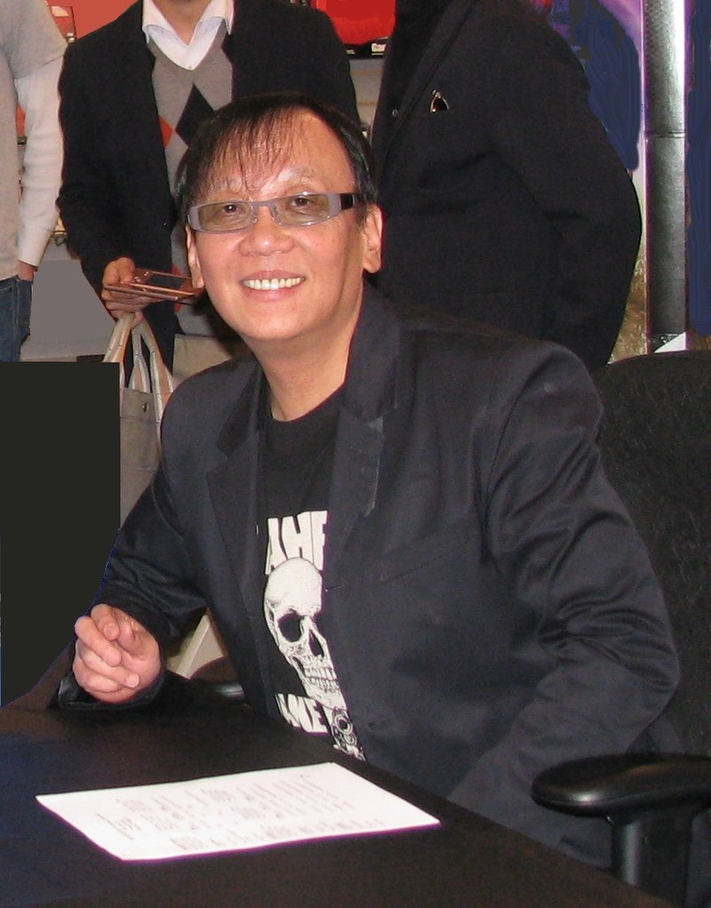
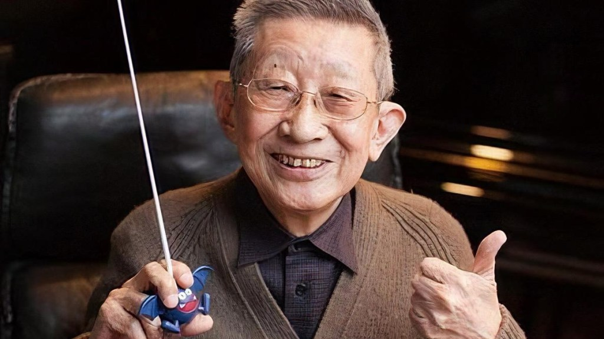

Introducción
Dragon quest es una saga de RPGs de mundo semiabierto, la cual a llegado a estar como líder de ventas en el país nipón, por ello es una de las sagas más queridas en Japón. Por dicha razón, si tenemos la posibilidad de viajar a Japón veremos restaurantes y tiendas inspirados en dicha tematica.
Tal es la popularidad del juego que el gobierno japonés ideó un plan para cambiar la fecha de lanzamiento de los juegos DQ, dado que muchas personas faltaban al trabajo o la escuela para jugar, y esto estaba afectando negativamente la economía del país.
A diferencia de la gran popularidad que presenta en Japón en el continente occidental no ha terminado de despegar, debido a la mala campaña de marketing que realiza la franquicia de la saga y a esto hay que añadir que son pocos los titulos que llegan a occidente.
A pesar de la popularidad en occidente, no les ha impedido que la serie original (sin contar los juegos extra, especiales y spin-offs) del juego ya tiene once versiones, siendo la última (Dragon Quest XI) lanzada en 2017
Historia
En 1982, Enix patrocinó una conferencia nacional de videojuegos. Enix por aquel entonces estaba formada por un gran número de los que en un futuro serían los creadores de Dragon Quest, incluyendo a Yūji Horii. Kōichi Sugiyama, ya afamado por algunas de sus canciones, impresionado con el trabajo de Enix, les envió una petición para poder componer música para algunos de sus videojuegos, la cual fue aceptada. Enix pretendía hacer por aquel entonces un videojuego de rol. El creador de Dragon Ball, Akira Toriyama, que conocía a Horii, fue el encargado de ilustrar los personajes y monstruos de dicho videojuego.
Durante el desarrollo de Dragon Quest, muchas personas dudaban del futuro éxito de un videojuego basado en magia y mazmorras, pues por aquel entonces estaba más de moda la ciencia ficción.
El videojuego fue un éxito rotundo y a él se sucedieron muchos más. Sin embargo, la mayoría de estos saldrían solo en Japón y algunos pocos en América del Norte. En 1990, Enix America Corporation cerró y los videojuegos Dragon Quest V y Dragon Quest VI nunca llegaron a salir tampoco en América del Norte, quedándose como exclusivos de Japón. Europa, por su parte, no recibió ningún título de la saga sino hasta la llegada del videojuego Dragon Quest VIII, a excepción del videojuego Dragon Quest Monsters de Game Boy Color.
En 2008 fueron anunciados para Nintendo DS las versiones remake de la trilogía de Zenithia, Dragon Quest IV, Dragon Quest V y Dragon Quest VI, los cuales iban a ser comercializados en Japón, América del Norte y en la región PAL. Durante el período de publicación de estos tres videojuegos, se desarrolló Dragon Quest IX, el cual también fue estrenado en América del Norte y en la región PAL. Las versiones remake de los videojuegos Dragon Quest VII y Dragon Quest VIII para Nintendo 3DS, así como los videojuegos Dragon Quest Heroes y Dragon Quest Builders, también fueron estrenados en América del Norte y en la región PAL.
>Por otro lado, en América del Norte los primeros videojuegos de la saga Dragon Quest fueron conocidos con el nombre Dragon Warrior, hasta la salida del videojuego Dragon Quest VIII. Esto fue debido a que en América del Norte ya existía otro videojuego con un nombre muy similar, DragonQuest, desarrollado por la empresa Simulations Publications, Inc. en 1980. Sin embargo, Simulations Publications, Inc. cerró en 1982, y así en 2003 Square Enix registró el nombre Dragon Quest en ese territorio, permitiendo así la publicación de los videojuegos con su título original.
Square Enix
Square Enix es la afamada compañía creadora de variosvideo juegos que fascinaron a todos los
jugadores. En principio, eran Square y Enix, dos compañías diferentes, hasta que en 2004 se
"fusionaron" creando Square Enix.
Square Co., Ltd. conocida internacionalmente como Squaresoft, fue una compañía japonesa de
videojuegos creada en 1983, llamada Denyuusha.
En 1985, Squaresoft comenzó a crear sus primeros videojuegos para el famoso Nintendo
Entertainment System. Estos no tuvieron el éxito deseado, y en 1987 la compañía estaba a
punto de caer en quiebra.
Para evitar esto, Squaresoft contrató a Hironobu Sakaguchi, al cual se le dio la oportunidad de crear el último juego de la compañía. Aquella creación recibió el nombre de Final Fantasy. El juego tuvo un enorme éxito, tanto en Japón como en Estados Unidos, que ni siquiera su propio creador había esperado. Desde entonces, se han creado 16 secuelas de este juego, para diferentes plataformas, convirtiéndose en uno de los máximos referentes de los juegos de rol.
Square también ha creado otros juegos conocidos, casi siempre del género de RPG, tales como
Chrono Trigger, Chrono Cross, Secret of Mana, Seiken Densetsu 3, Xenogears, Final Fantasy
Tactics, Brave Fencer Musashi, Vagrant Story y Kingdom Hearts; este último hecho con
cooperación de Disney Interactive. El único juego de un género que no fuera RPG en que
Square ha destacado ha sido Tobal, que tuvo una secuela.
En el 2001, la sección de Square Pictures, creó una película basada en tecnología CGI, hecha
a partir del propio juego Final Fantasy, la cual se llamó Final Fantasy: The Spirits Within.
Square se fusionó con Enix, otra compañía japonesa de juegos y especialista también en el género de RPG, en el 2002 para cubrir los gastos de producción y hacerse más competitiva tras el resultado del fracaso económico de la película Final Fantasy: The Spirits Within. En Abril de 2003 la unión se completó, creando Square Enix.
Su origen es el resultado de la fusión de las compañías Squaresoft y Enix, llevada a cabo el 1 de abril de 2003. En febrero de 2004 apareció en España el primer Final Fantasy de dicha fusión, Final Fantasy X-2.
Square Enix se subdivide regionalmente en Square Enix Japan, Square Enix U.S.A., Inc. (para
todo el norte de América) y Square Enix Europe Ltd. (para Europa y otras áreas con el
estándar de televisión PAL). Recientemente en 2006 Square Enix abrió una nueva franquicia en
China, Square Enix China, con el propósito de expandirse en el mercado asiático.
La franquicia del juego Dragon Quest es considerada la más popular en Japón, según encuestas
oficiales.
Creadores
Akira Toriyama
Akira Toriyama (Nagoya, 5 de abril de 1955) es un mangaka y diseñador de personajes japonés. Es conocido por sus obras Dr. Slump y Dragon Ball, y actuando como diseñador de personajes para varios videojuegos populares como la saga de Dragon Quest, Chrono Trigger y Blue Dragon. Toriyama es considerado como uno de los artistas que cambió la historia del manga, ya que sus obras son muy influyentes y populares, particularmente Dragon Ball y la saga Dragon Quest, que muchos artistas de manga citan como fuente de inspiración.
Toriyama entró en una agencia de publicidad antes de convertirse en mangaka, donde inmediatamente fue contratado después por una empresa de publicidad en Nagoya; trabajó allí durante 3 años, donde siempre tenía que ir vestido de corbata (algo que a él le incomodaba), lo que le quitó el interés, aparte la mala relación con sus jefes fue lo que le condujo a la decisión de renunciar y a dedicarse por completo al manga. Su vida de mangaka empezó con una publicación en Shonen Jump de Shūeisha. Más tarde crearía muchas otras historias para esa revista y, posteriormente recogidas en tomos. Toriyama se hizo inmensamente popular en Japón y en el extranjero gracias a su obra Dragon Ball.

Tras llamar la atención del que fuera su editor para el resto de su carrera, Kazuhiko Torishima, con obras como Awawa World y Mysterious Rain Jac, logró debutar a corta edad como dibujante en 1978, con la historia Wonder Island, que fue publicada en la revista semanal Shonen Jump. A partir de ese momento creó una serie de historias cortas como Tomato (esbozo de lo que luego sería Dr. Slump) y Today's Highlight Island. Todas tuvieron una moderada aceptación entre los fans, y gracias a ello el autor tuvo la posibilidad de realizar su primera serie.
Por otro lado el éxito de Toriyama también lo ha llevado a trabajar en el diseño de personajes de varios videojuegos. De manera particular, en la popular serie de videojuegos de rol Dragon Quest (conocida principalmente en Estados Unidos como Dragon Warrior). También diseñó los personajes del videojuego de rol Chrono Trigger para Super Nintendo y Super Famicom y del popular juego de peleas Tobal No. 1 para PlayStation y también de su secuela Tobal No. 2, que solo fue publicada en Japón. Su última aportación fue para la consola Xbox 360, donde aporta con su arte para el juego de rol Blue Dragon.
Yuji Horii
Yuji Horii (6/1/1954) es un diseñador de videojuegos japonés, más conocido por ser el creador de la mítica saga Dragon Quest. Horii se graduó en el departamento literatura de la Universidad de Waseda. Y comenzo a trabajar como freelance para distintos periodicos, revistas y comics. En 1983, Yuji se apunto a un concurso que pratocinaba Enix y logro sobresalir en un concurso de programación de videojuegos con un juego de computadora de tenis, lo que lo motivó para ser un diseñador de videojuegos. Sus trabajos incluyen los juegos de Dragon Quest, The PORTOPIA Serial Murder Case, y la saga Itadaki Street.
Horii fue el supervisor del juego para Super Nintendo Entertainment System, Chrono Trigger. Chrono Trigger tenía múltiples finales, y en uno de ellos aparece Horii junto al resto del personal.
Actualmente, Horii dirige su propia compañía de producción, Armor Project, que tiene un contrato exclusivo con Square Enix, originalmente establecido con Enix antes de que se fusionara con Square.
Koichi Sugiyama
Koichi Sugiyama nació el 11 de abril de 1931 en el Tokio anterior a la Segunda Guerra Mundial, donde realizó sus estudios universitarios y comenzó a desarrollar el interés por la música, herencia de sus padres. En esta etapa empezaría a componer sus primeras piezas y a los veinte años estrena el ballet infantil Mr. Lost Caterpillar. En 1954 se gradúa y comienza a trabajar en radiodifusión para Nippon Cultural Broadcasting, donde conseguiría meterse en la industria televisiva y ganar buenos contactos.
A mediados de los ochenta Koichi Sugiyama ya era un músico muy respetado en Japón, y además de eso era un gran jugador de shogi. Sugiyama se había interesado por un videojuego sobre este juego de tablero, un título de Enix para PC-88 conocido como Kazuo Morita's Shogi. El señor Sugiyama rellenó una postal y la envió a la compañía, donde se sorprendieron al recibir algo así de una estrella de la música. Enix contestó a Sugiyama ofreciéndole componer Wingman 2, secuela de su juego basado en el manga del mismo nombre, y de esa manera fue como el maestro entró en la industria del videojuego. Su primera banda sonora en ver la luz sería la de World Golf en 1985, otro clásico de Enix, pero la auténtica revolución llegaría un año más tarde, aquel 2 de mayo de 1986.
Yuji Horii, Akira Toriyama y Koichi Sugiyama crearon el JRPG que más tarde le convertiría en leyenda y que formaría la saga más exitosa de Enix. Dragon Quest fue un éxito absolutamente arrollador que vendió 2 millones de copias solamente en Japón y sentó las bases de todo un género gracias a salir en el momento y lugar adecuados. A los diseños de Toriyama se sumaba la banda sonora, que introducía la música de cámara europea en los cinco canales disponibles del cartucho de Famicom. Sugiyama estableció la estructura de ocho temas sobre la que girarían todos los JRPG venideros: 1. Overture, 2. Castle, 3. Town, 4. Field, 5. Dungeon, 6. Battle, 7. Final Battle y 8. Finale.